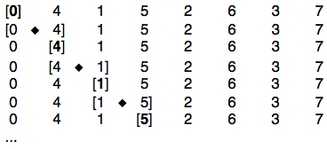
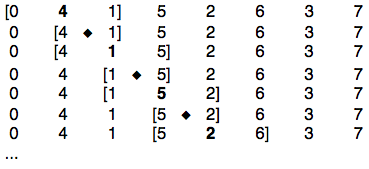
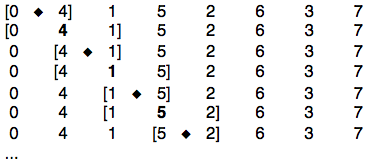
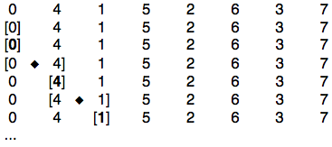

DXMix crossfades between signals according to demand-rate control
Part of: miSCellaneous
Inherits from: AbstractDX
DXMix crossfades between signals according to a sequence of indices, which, together with fadeTimes and stepTimes, can be passed as demand rate ugens.
NOTE: As interface and conventions of DX ugens are nearly identical, I didn't double examples for all features. It's recommended to start with the DX suite overview and go through the help file examples in this order: DXMix - DXMixIn - DXEnvFan - DXEnvFanOut - DXFan - DXFanOut. Some general conventions are treated in detail in the following examples: fades and steps in DXMix help, Ex.2 – width and offset arguments in DXMix help, Ex.3 – multichannel expansion in DXMix help, Ex.6 – crossfade types in DXEnvFan help, Ex.1.
NOTE: PanAz.ar's args pos and orientation were scaled wrongly in SC versions up to 3.8. DX ugens neutralize this bug by inverse scaling, so it should actually work the same with SC versions before 3.9 with the exception of examples with modulatable width (disabled in earlier versions). I didn't encounter differences in any other test examples, however I'd rather recommend a SC version from 3.9 onwards, if you have the choice.
NOTE: Depending on the multichannel sizes it might be necessary to increase server resources, i.e. the number of interconnect buffers (e.g. s.options.numWireBufs = 256; s.reboot). See Ex.8 from DXMix help and Ex.2, Ex.4 from DXEnvFan help for aspects of CPU demand.
NOTE: In my tests timing was exact up to one sample. So when used for granulation DX ugens avoid the inevitable inccuracies of language-based triggering in realtime. However care has to be taken: fade and step times must be larger than the duration of a control cycle. With default values sampleRate = 44100 Hz and blockSize = 64, this equals ca. 0.00145 sec. If you go below, the fade mechanism is messed up and you get jumps and clicks. Accordingly with fadeModes 3 and 4 you have to ensure that the remaining 'real' stepTime, which is calculated by stepTime minus fadeTime, is larger than this threshold. But as a workaround you can always lower the blocksize. See DXFan help Ex.4 for aspects of granulation with high trigger rates / short grain durations.
NOTE: The current implementation is bound to counting with Dseries and – inherent to 32 bit floats – the integer accuracy limit of 2 ** 24 - 1 = 16777215. This can be an issue with setups that are using extreme short durations for hours.
CREDITS: Thanks to Wouter Snoei for his PlayBufCF class. It gave me a lot of inspiration for DX ugens – although in the end the implementation with PanAz and DemandEnvGen is quite different. Thanks also to Till Bovermann for ironing out a longstanding bug in PanAz.
See also: DX suite, DXMixIn, DXEnvFan, DXEnvFanOut, DXFan, DXFanOut , Buffer Granulation, Live Granulation, PbindFx, kitchen studies
Creation / Class Methods
*ar (in, channelsArrayRef, fadeTime = 1, stepTime = 1, fadeMode = 0, sine = 1, equalPower = 1, power = 1, curve = 0, allowTypeSeq = 0, fadeRate = \ar, maxFadeNum = inf, maxWidth = 2, width = 2, initOutOffset = 0, maxDynOutOffset = 1, dynOutOffset = 0, allowFadeEnd = 1, zeroThr = nil, doneAction = 0)
in - Determines the sequence of signals to be crossfaded.
A demand rate or other ugen returning channel array indices, a single channel array index or
a SequenceableCollection of such, causing multichannel expansion.
If in this case the overall multichannel size is larger than the size of in
and the latter contains demand rate ugens, they must all be wrapped into Functions.
channelsArrayRef - The signals to be crossfaded.
To avoid multichannel expansion of this arg, the signals to be crossfaded must be wrapped into a Ref object.
If the Ref object contains an array of signal arrays, these arrays are crossfaded.
A SequenceableCollection causes multichannel expansion, whereby single items of the collection
can itself be Ref objects containing multichannel signals.
See multichannel examples below.
fadeTime - A fade time, a demand rate or other ugens returning fade times or
a SequenceableCollection of such, causing multichannel expansion.
If in this case the overall multichannel size is larger than the size of fadeTime
and the latter contains demand rate ugens, they must all be wrapped into Functions.
The interpretation of fadeTime depends on fadeMode.
fadeTime must be larger than the duration of a control cycle.
Defaults to 1.
stepTime - A step time, a demand rate or other ugens returning step times or
a SequenceableCollection of such, causing multichannel expansion.
If in this case the overall multichannel size is larger than the size of stepTime
and the latter contains demand rate ugens, they must all be wrapped into Functions.
The interpretation of stepTime depends on fadeMode.
stepTime must be larger than the duration of a control cycle.
Defaults to 1.
fadeMode - Integers between 0 and 4 or
a SequenceableCollection of such, causing multichannel expansion. Not modulatable.
fadeMode = 0: only fadeTimes are used, no steps
fadeMode = 1: alternate steps and fades, begin with step; stepTime means time without fade
fadeMode = 2: alternate fades and steps, begin with fade; stepTime means time without fade
fadeMode = 3: alternate steps and fades, begin with step; stepTime means sum of step and fade,
thus stepTime must be larger than fadeTime,
the difference must be larger than the duration of a control cycle
fadeMode = 4: alternate fades and steps, begin with fade; stepTime means sum of fade and step,
thus stepTime must be larger than fadeTime,
the difference must be larger than the duration of a control cycle
Defaults to 0.
sine - Determines the crossfade type: sine-based or not.
A Boolean, 0 or 1 or a demand rate or other ugen returning sine numbers or
a SequenceableCollection of such, causing multichannel expansion.
If in this case the overall multichannel size is larger than the size of sine
and the latter contains demand rate ugens, they must all be wrapped into Functions.
Modulating this arg is only possible if allowTypeSeq equals 1.
Defaults to 1.
equalPower - Determines if crossfading of equal power type (square root) should be applied.
A Boolean, 0 or 1 or a demand rate or other ugen returning equalPower numbers or
a SequenceableCollection of such, causing multichannel expansion.
If in this case the overall multichannel size is larger than the size of equalPower
and the latter contains demand rate ugens, they must all be wrapped into Functions.
Modulating this arg is only possible if allowTypeSeq equals 1.
Defaults to 1.
power - This only comes into play if equalPower equals 0, then it's applied to the
crossfade amplitude. If power and curve are passed, power applies before.
A positive Number or a demand rate or other ugen returning positive power numbers or
a SequenceableCollection of such, causing multichannel expansion.
If in this case the overall multichannel size is larger than the size of power
and the latter contains demand rate ugens, they must all be wrapped into Functions.
Sequencing this arg with demand rate ugens is only possible if allowTypeSeq equals 1.
Defaults to 1.
curve - This only comes into play if equalPower equals 0, then it's applied to the
crossfade amplitude according to the lincurve mapping.
If power and curve are passed, power applies before.
A Number or a demand rate or other ugen returning curve numbers or
a SequenceableCollection of such, causing multichannel expansion.
If in this case the overall multichannel size is larger than the size of curve
and the latter contains demand rate ugens, they must all be wrapped into Functions.
Sequencing this arg with demand rate ugens is only possible if allowTypeSeq equals 1.
Calculation of curvature is not giving reliable results when width and / or dynOutOffset are
being modulated at the same time.
Defaults to 0.
allowTypeSeq - Enables sequencing of sine, equalPower, power and curve with
demand rate ugens and modulating of sine and equalPower with other ugens.
A Boolean, 0 or 1 or a SequenceableCollection of such, causing multichannel expansion.
Not modulatable. As this requires more ugens running in parallel it is disabled by default = 0.
fadeRate - One of the Symbols \ar and \kr, determining the crossfade rate used by PanAz or
a SequenceableCollection of such, causing multichannel expansion. Not modulatable.
Defaults to \ar.
maxFadeNum - Integer determining the maximum number of fades, after which doneAction applies.
A SequenceableCollection causes multichannel expansion. Not modulatable.
Defaults to inf.
maxWidth - An Integer determining the maximum width or
a SequenceableCollection of such, causing multichannel expansion, width goes into PanAz's width arg.
maxWidth increases the internally used and potentially needed number of parallel channels. Not modulatable.
Defaults to 2.
width - Integer, Float, UGen (only from SC 3.9 onwards) or a SequenceableCollection of such,
causing multichannel expansion. Not modulatable in versions earlier than SC 3.9.
It determines the width according to PanAz's width arg. Note that a ugen's output must not exceed maxWidth.
Defaults to 2.
initOutOffset - An Integer or Float or a SequenceableCollection of such, causing multichannel expansion.
Determines an initial offset for PanAz's pos arg.
This can be useful for a start with full or reduced width.
Not modulatable. Defaults to 0.
maxDynOutOffset - An Integer or Float or a SequenceableCollection of such, causing multichannel expansion.
Determines the maximum dynOutOffset to be expected.
maxDynOutOffset increases the internally used and potentially needed number of parallel channels.
Not modulatable. Defaults to 1.
dynOutOffset - UGen, Integer or Float or
a SequenceableCollection of such, causing multichannel expansion.
By passing a ugen the movement between buses can be modulated.
Note that a ugen's output must not exceed maxDynOutOffset.
Defaults to 0.
allowFadeEnd - Integer, Boolean or a SequenceableCollection of such, causing multichannel expansion.
Determines if a demand rate input to in with finite length will be monitored, which needs a quite complicated
trigger logic and more running ugens. If set to 0, the behaviour after the end of in is undefined.
Defaults to 1.
zeroThr - A Number or a ugen returning zeroThr numbers or
a SequenceableCollection of such, causing multichannel expansion.
Determines if output values below this threshold are replaced by 0.
This makes sense if the output signal is used as trigger (e.g. with DXEnvFan).
In the case of low power numbers small inaccuracies are amplified, this is avoided
with an appropriate zeroThr (e.g. = 0.001), as the operation is applied before taking the power.
As this requires more ugens running in parallel it is disabled by default = nil.
doneAction - Integer or a SequenceableCollection of such, causing multichannel expansion.
Determines the doneAction after maxFadeNum is exceeded.
Defaults to 0.
*kr (in, channelsArrayRef, fadeTime = 1, stepTime = 1, fadeMode = 0, sine = 1, equalPower = 1, power = 1, curve = 0, allowTypeSeq = 0, fadeRate = \ar, maxFadeNum = inf, maxWidth = 2, width = 2, initOutOffset = 0, maxDynOutOffset = 1, dynOutOffset = 0, allowFadeEnd = 1, zeroThr = nil, doneAction = 0)
Examples
(
// load with extended resources
s = Server.local;
Server.default = s;
s.options.numWireBufs = 256;
s.reboot;
)
Ex.1) Basic usage: simple crossfade
// crossfading between 2 mono sources
// the array of channels to crossfade must be put into a Ref
(
x = {
DXMix.ar(
Dseq([0, 1], inf),
`[
Saw.ar(LFDNoise3.kr(0.1).range(40, 90), 0.03),
PinkNoise.ar(0.05)
],
fadeTime: 3
) ! 2
}.play
)
x.release
// sources can itself be multichannel arrays
// fadeTimes passed as demand rate ugen
(
x = {
var lfo = LFDNoise3.kr(0.2);
DXMix.ar(
Dseq([0, 1], inf),
`[
Saw.ar(lfo.range(40, 90) * [1, 1.02], 0.03),
{ BPF.ar(PinkNoise.ar(0.05), lfo.range(200, 5000), 0.1) } ! 2
],
fadeTime: Dwhite(3, 7)
)
}.play
)
x.release
// So far all examples default to width = 2, PanAz's default width.
// It means that at most two channels overlap during crossfade.
// If higher values of width should be taken, maxWidth must be increased,
// in order to ensure a sufficiently large number of channels used for overlapping internally.
// See Ex.3 for a detailled explanation of the width arg.
// sliding over a sequence of channel indices
(
x = {
var lfo = LFDNoise3.kr(0.2);
DXMix.ar(
Dseq([0, 2, 1, 3], inf),
`[
Saw.ar(lfo.range(40, 70) * [1, 1.02], 0.02),
{ BPF.ar(PinkNoise.ar(0.05), lfo.range(200, 5000), 0.1) } ! 2,
Pulse.ar(lfo.range(40, 70) * [1, 1.02], 0.5, 0.02),
{ BPF.ar(Dust.ar(100), lfo.range(200, 5000), 0.1) } ! 2
],
fadeTime: Dwhite(3, 7),
maxWidth: 5,
width: 4
)
}.play
)
x.release
Ex.2) Basic usage: fades and steps
// in Ex. 1 we always used fadeMode's default 0, where only fades are polled
// You might instead want to alternate steps (sections of no fade) with fades:
// fadeMode = 0: only fadeTimes are used, no steps
// fadeMode = 1: alternate steps and fades, begin with step; stepTime means time without fade
// fadeMode = 2: alternate fades and steps, begin with fade; stepTime means time without fade
// fadeMode = 3: alternate steps and fades, begin with step; stepTime means sum of step and fade,
// thus stepTime must be larger than fadeTime
// fadeMode = 4: alternate fades and steps, begin with fade; stepTime means sum of fade and step,
// thus stepTime must be larger than fadeTime
// Check different fadeModes here, different effects with same times:
// With fadeMode = 2 or 4 we start with a short fade, which gives the impression of a pickup.
// With fadeMode = 3 or 4 the tempo is faster, as fadeTime is subtracted from stepTime.
// With these modes it's the user's responsibility to limit fadeTimes.
// NOTE: fadeTimes and stepTimes must be larger than the duration of a control cycle
// with default values sampleRate = 44100 Hz and blockSize = 64, this equals ca. 0.00145 sec.
// If you go below, the step mechanism is messed up you get jumps and clicks.
// Accordingly with fadeModes 3 and 4 you have to ensure that the remaining 'real' stepTime,
// which is calculated by stepTime - fadeTime, is larger than this threshold.
(
x = {
DXMix.ar(
Dxrand((0..19), inf),
`(Saw.ar((1..10) * 100, 0.1) ++ SinOsc.ar((1..10) * 200, 0, 0.15)),
fadeTime: 0.05,
stepTime: 0.15,
fadeMode: 1
// check other fadeModes
// fadeMode: 2
// fadeMode: 3
// fadeMode: 4
)
// short fade-in with Function.play to make initial DXMix fade (fadeModes 2 and 4) audible
}.play(fadeTime: 0.005)
)
x.release
// some overtone fun with large width, independant DXMixs for L and R
(
x = {
var lfo = XLine.ar(1, 0.5, 60);
{
DXMix.ar(
Dxrand((0..15), inf),
`(Saw.ar((1..8) * 70 * lfo, 0.05) ++ SinOsc.ar((1..8) * 68.5 * lfo, 0, 0.075)),
fadeTime: 0.02,
stepTime: 0.18,
fadeMode: 1,
width: 7,
maxWidth: 8
)
} ! 2
}.play
)
x.release
// ugen arguments can also be passed to 'in'
// the 'initOutOffset' arg is explained along the next examples
(
x = {
var lfo = XLine.ar(1, 0.5, 60);
{
DXMix.ar(
LFDNoise3.ar(2).range(0, 15),
`(LFTri.ar((1..8) * 70 * lfo, 0, 0.05) ++ SinOsc.ar((1..8) * 68.5 * lfo, 0, 0.075)),
fadeTime: 0.01,
stepTime: 0.15,
fadeMode: 1,
width: 7,
maxWidth: 8,
equalPower: 0, // better here with sines, see curvature options in DXEnvFan help, Ex.1
initOutOffset: -4
)
} ! 2
}.play
)
x.release
// stepTime controlled by ugen
(
x = {
var lfo = XLine.ar(1, 0.5, 60);
{
DXMix.ar(
LFDNoise3.ar(2).range(0, 15),
`(LFTri.ar((1..8) * 70 * lfo, 0, 0.05) ++ SinOsc.ar((1..8) * 68.5 * lfo, 0, 0.075)),
fadeTime: 0.01,
stepTime: SinOsc.ar(0.2).range(0.1, 0.5),
fadeMode: 1,
width: 3,
maxWidth: 8,
initOutOffset: -3
)
} ! 2
}.play
)
x.release
Ex.3) Width and offset arguments for channel span
// The width parameter determines the number of channels, which are
// maximally affected by the crossfade, it uses the convention of PanAz's width arg.
// The graphics below explain the overlap scheme of DXMix and cousins,
// for DXMix the indices denote the channels to be mixed,
// for DXMixIn the indices denote the buses to be mixed,
// for DXFanOut the buses to which the signal will be spread,
// for DXFan the channels to which the signal will be spread,
// for DXEnvFanOut the buses to which the envelope will be spread.
// for DXEnvFan the channels to which the envelope will be spread.
// Let's look at a DXMix example with different width values:
(
x = {
var lfo = XLine.ar(1, 0.5, 60);
DXMix.ar(
Dseq([0, 4, 1, 5, 2, 6, 3, 7], inf),
`(Saw.ar((1..8) * 70 * lfo, 0.075)),
fadeTime: 0.12,
stepTime: 0.38,
fadeMode: 1,
width: 2,
// check other width values below maxWidth
maxWidth: 8
) ! 2
}.play
)
x.release
// Width = 2 means that the crossfade only affects adjacent channels / signals / buses.
// In the graphic the center position of the movement is marked with bold letters,
// a diamond sign denotes, that the center lies in the middle of two channels,
// which are then equally weighted. Squared brackets enclose the active channel numbers.
// So the succession of two rows describes one fade.
// width = 2:

// For an arbitrary integer width n the number of active channels lies between n-1 and n,
// here a scheme of the number of affected channels:
width number of channels affected with
center position directly at channel
2 1
3 3
4 3
5 5
6 5
7 7
8 7
...
width number of channels affected with
center position exactly between two channels
2 2
3 2
4 4
5 4
6 6
7 6
8 8
...
// DXMix and cousins take over the logic of PanAz. However there's a little difference at
// start with width > 2. As we are sliding over a index sequence which has a beginning,
// it seems natural that the start index should be the middle of the span, which is covered according to width.
// So from width > 2 onwards there's a "left side" of the channel span, which hasn't been generated so far,
// thus the full width is not reached before an entrance phase which increases with the width value.
// width = 3:
// width = 4:

// If one wants to start width full width there's the possibility to do this by
// passing an initOutOffset argument.
// Here we start with initOutOffset = 1, fadeMode = 1 (step first),
// index = 4 (5th partial) is the middle of the channel span with most weight,
// which can be clearly perceived.
(
x = {
var lfo = XLine.ar(1, 0.5, 60);
DXMix.ar(
Dseq([0, 4, 1, 5, 2, 6, 3, 7], inf),
`(Saw.ar((1..8) * 70 * lfo, 0.075)),
fadeTime: 0.1,
stepTime: 2,
fadeMode: 1,
width: 3,
maxWidth: 8,
initOutOffset: 1
) ! 2
}.play
)
x.release
// overlap scheme with width = 3 and initOutOffset = 1:

// Here we start with initOutOffset = 0.5, fadeMode = 1 (step first),
// channels with indices 0 and 4 (base tone and 5th partial) are equally weighted.
(
x = {
var lfo = XLine.ar(1, 0.5, 60);
DXMix.ar(
Dseq([0, 4, 1, 5, 2, 6, 3, 7], inf),
`(Saw.ar((1..8) * 70 * lfo, 0.075)),
fadeTime: 0.1,
stepTime: 2,
fadeMode: 1,
width: 3,
maxWidth: 8,
initOutOffset: 0.5
) ! 2
}.play
)
x.release
// overlap scheme with width = 3 and initOutOffset = 0.5:

// It might also be desirable to start with a fade from silence.
// This can be done with a negative initOutOffset:
(
x = {
var lfo = XLine.ar(1, 0.5, 60);
DXMix.ar(
Dseq([0, 4, 1, 5, 2, 6, 3, 7], inf),
`(Saw.ar((1..8) * 70 * lfo, 0.075)),
fadeTime: 2,
width: 2,
initOutOffset: -1
) ! 2
}.play
)
x.release
// overlap scheme with width = 2 and initOutOffset = -1:

// width can also be modulated (suited rather for lfos, only enabled from SC 3.9 onwards)
(
x = {
var lfo = XLine.ar(1, 0.5, 60);
DXMix.ar(
Dseq([0, 4, 1, 5, 2, 6, 3, 7], inf),
`(Saw.ar((1..8) * 70 * lfo, 0.05)),
fadeTime: 2,
width: SinOsc.ar(LFDNoise3.ar(1).range(0.2, 10)).range(2, 5),
maxWidth: 5
) ! 2
}.play
)
x.release
// for faster modulations take dynOutOffset,
// maxDynOutOffset must be set properly
(
x = {
var lfo = XLine.ar(1, 0.5, 60);
{
DXMix.ar(
Dseq([0, 4, 1, 5, 2, 6, 3, 7], inf),
`(SinOsc.ar((1..8) * 140 * lfo, 0, 0.05)),
fadeTime: 2,
width: 2,
maxDynOutOffset: 2,
dynOutOffset: SinOsc.ar(LFDNoise3.ar(1).range(0.2, 25)).range(0, 2)
)
} ! 2
}.play
)
x.release
// You can also control the movement of the channel span entirely by
// passing a ugen to dynOutOffset, therefore set fadeTime to inf.
(
x = {
var lfo = XLine.ar(1, 0.5, 60);
{
DXMix.ar(
Dseq([0, 4, 1, 5, 2, 6, 3, 7, 0], inf),
`(SinOsc.ar((1..8) * 140 * lfo, 0, 0.05)),
fadeTime: inf,
width: 2,
maxDynOutOffset: 7,
dynOutOffset: SinOsc.ar(0.2).range(0, 7)
)
} ! 2
}.play
)
x.release
Ex.4) Switching between PlayBufs
// This can go towards granulation
// load sound file
b = Buffer.read(s, Platform.miSCellaneousDirs[0] +/+ "Sounds" +/+ "kitchen_sounds_1.wav");
// switch between looping PlayBufs
(
x = {
var sig = {
DXMix.ar(
Dxrand([0, 1, 2], inf),
`(PlayBuf.ar(1, b, BufRateScale.kr(b) * [0.4, 1, 2.2], loop: 1)),
stepTime: 0.2,
fadeTime: 0.01,
fadeMode: 1,
width: 2
) } ! 2;
// do a bit correlation
Splay.ar(sig, 0.8)
}.play
)
x.release
Ex.5) Granulation
// granulation by fast fading between channels
// here single channels contain PlayBufs with ordered rates
// load sound file
b = Buffer.read(s, Platform.miSCellaneousDirs[0] +/+ "Sounds" +/+ "kitchen_sounds_1.wav");
// widths (default 2) means overlap, thus grain length = 0.02
(
x = {
var durs, trig, sig, thr = 0.5;
sig = { |i|
DXMix.ar(
Dseq((49..0), inf),
`(PlayBuf.ar(
1,
b,
BufRateScale.kr(b) * ({ |j| j / 500 + 0.7 + (i * 0.02) } ! 50),
loop: 1
)),
fadeTime: 0.01
)
} ! 2;
// do a bit correlation
Splay.ar(sig, 0.8)
}.play
)
x.release
// microsound with synthesized sources
// fadeTime change between very fast and medium length
// compare version with dynOutOffset
(
// universal lfo, several instances to be used, thus put into a Function
l = { LFDNoise3.ar(LFDNoise3.ar(1).exprange(0.1, 30)).range(0.5, 3) };
// pool of sources and arguments for channel array
e = (
GrayNoise: [0.1],
Dust: [500],
BrownNoise: [0.1],
Pulse: [exprand(50, 500) * l],
SinOsc: [exprand(50, 500) * l],
Saw: [exprand(50, 500) * l]
);
x = {
var durs, trig, sig, thr = 0.5;
sig = { |i|
DXMix.ar(
Dseq((0..19), inf),
`(
// generate array of oscillators to slide over
{
var sym = e.keys.choose;
sym.asClass.performList(\ar, e[sym]);
} ! 20
),
fadeTime: Dstutter(
Diwhite(2, 5),
Dwhite(0.01, 1).linexp(0.01, 1, 0.01, 1)
),
width: 2,
maxWidth: 2,
// add oscillation between adjacent channels of sequence
// dynOutOffset: SinOsc.ar(LFDNoise3.ar(1).exprange(1, 100)).range(0, 1)
) * 0.1
} ! 2;
// do a bit correlation
Splay.ar(sig, 0.8) * 2
}.play
)
x.release
Ex.6) Multichannel expansion
// If a multiple demand rate ugen is implicitely needed, it must be wrapped into a Function
// Because of the array passed to fadeTime, we need two Dseqs to poll from.
// As only one demand rate ugen is passed as 'in' arg, it must be wrapped into a Function.
(
x = {
DXMix.ar(
{ Dseq([0, 1, 2], inf) },
// equivalent:
// [Dseq([0, 1, 2], inf), Dseq([0, 1, 2], inf)],
`[
Saw.ar(LFDNoise3.kr(0.1).range(40, 90), 0.03),
Pulse.ar(LFDNoise3.kr(0.1).range(80, 180), 0.5, 0.03),
PinkNoise.ar(0.05)
],
fadeTime: [0.03, 3]
)
}.play
)
x.release
// L and R switching between same sources
(
x = {
var lfo = { LFDNoise3.kr(0.2) };
DXMix.ar(
[Dseq([0, 1, 2], inf), Dseq([2, 3, 1], inf)],
`[
Saw.ar(lfo.().range(40, 90), 0.03),
BPF.ar(PinkNoise.ar(0.05), lfo.().range(200, 5000), 0.1),
BPF.ar(Crackle.ar(1.95, 0.5), lfo.().range(200, 5000), 0.1),
Pulse.ar(lfo.().range(40, 90), 0.5, 0.03)
],
fadeTime: { Dwhite(3, 7) }
)
}.play
)
x.release
// L and R switching between different sources
(
x = {
var lfo = { LFDNoise3.kr(0.2) };
DXMix.ar(
[Dseq([0, 1], inf), Dseq([1, 0], inf)],
[
`[
Saw.ar(lfo.().range(40, 90), 0.03),
BPF.ar(PinkNoise.ar(0.05), lfo.().range(200, 5000), 0.1)
],
`[
Saw.ar(lfo.().range(40, 90), 0.03),
BPF.ar(PinkNoise.ar(0.05), lfo.().range(200, 5000), 0.1)
]
],
fadeTime: { Dwhite(3, 7) }
)
}.play
)
x.release
// last example, written in a more condensed way
(
x = {
var lfo = { LFDNoise3.kr(0.2) };
DXMix.ar(
[Dseq([0, 1], inf), Dseq([1, 0], inf)],
[
{ Saw.ar(lfo.().range(40, 90), 0.03) } ! 2,
{ BPF.ar(PinkNoise.ar(0.05), lfo.().range(200, 5000), 0.1) } ! 2
].flop.collect(`_),
fadeTime: { Dwhite(3, 7) }
)
}.play
)
x.release
// overtone series - L up, R down
// decreasing fundamental
(
x = {
var lfo = XLine.ar(1, 0.5, 60);
DXMix.ar(
[Dseq((0..15), inf), Dseq((15..0), inf)],
`(SinOsc.ar((1..16) * 120 * lfo, 0, 0.05)),
fadeTime: 0.1,
equalPower: 0
)
}.play
)
x.release
// more complicated expansions:
// DXMix produces a nested array of two stereo fades,
// it is mixed to a flat stereo array
(
x = {
var lfo = { LFDNoise3.kr(0.2) };
Mix(DXMix.ar(
[Dseq([0, 1], inf), Dseq([2, 3], inf)],
`[
Saw.ar(lfo.().range(40, 90) * [1, 3], 0.03),
{ BPF.ar(BrownNoise.ar(0.05), lfo.().range(100, 500), 0.3) } ! 2,
SinOsc.ar(lfo.().range(200, 500) * [2, 3], 0, 0.03),
{ BPF.ar(Dust.ar(300), lfo.().range(200, 5000), 0.1) } ! 2
],
fadeTime: [Dwhite(3, 7), Dwhite(2, 5)]
))
}.play
)
x.release
// similar situation as above, but the two stereo fades are referring to the same channels
// the result is a kind of accentuation
(
x = {
var lfo = LFDNoise3.kr(0.2);
Mix(DXMix.ar(
[Dseq([0, 1], inf), Dseq([1, 1, 1, 0], inf)],
`[
Saw.ar(lfo.range(40, 90) * [1, 3], 0.025),
{ BPF.ar(PinkNoise.ar(0.05), lfo.range(500, 5000), 0.1, 5) } ! 2
],
fadeTime: [Dwhite(3, 7), 0.1],
// width < 2 produces fade gaps
width: [2, 0.7]
))
}.play
)
x.release
// interesting multichannel expansions are possible with drate ugens based on nested arrays,
// e.g. coupling of streams
(
x = {
var lfo = { LFDNoise3.kr(0.2) };
Mix(DXMix.ar(
Dxrand([[0, 1], [1, 0], [2, 3], [3, 2]], inf),
`[
Saw.ar(lfo.().range(40, 90) * [1, 3], 0.02),
{ BPF.ar(PinkNoise.ar(1), lfo.().range(500, 5000), 0.02, 1) } ! 2,
SinOsc.ar(lfo.().range(400, 900) * [1, 1.2], 0, 0.01),
{ BPF.ar(ClipNoise.ar(0.2), lfo.().range(500, 5000), 0.02, 1) } ! 2
],
fadeTime: 0.1,
// width < 2 produces fade gaps
width: 1
))
}.play
)
x.release
Ex.7) Stopping and doneAction
// The done action is invoked after maxFadeNum.
(
x = {
var lfo = LFDNoise3.kr(0.2);
DXMix.ar(
Dseq([0, 1], inf),
`[
Saw.ar(lfo.range(40, 90) * [1, 1.02], 0.03),
{ BPF.ar(PinkNoise.ar(0.05), lfo.range(200, 5000), 0.1) } ! 2
],
fadeTime: 0.5,
stepTime: 1,
fadeMode: 0, // check with other modes too
maxFadeNum: 5,
doneAction: 2
)
}.play
)
x.release
Ex.8) Saving CPU
// This might be a topic if you're running many fades in parallel and
// fadeTimes are not extremely short (and hence audio rate doesn't make a difference).
// Here my machine needs ca. 2 % CPU for fadeRate = \kr
// and ca. 6 % CPU for fadeRate = \ar.
// 10 parallel sequences of overtone fading
(
x = {
var lfo = XLine.ar(1, 0.5, 60);
var sig = DXMix.ar(
{ Drand((0..15), inf) },
`(SinOsc.ar((1..16) * 70 * lfo, 0, 0.2 / (1..16).sqrt)),
fadeTime: 1 / (1..10),
fadeRate: \kr, // check CPU difference to \ar
maxWidth: 4,
width: 3
);
Splay.ar(sig)
}.play
)
x.release
// monitoring demand rate ugens needs a quite complicated trigger logic in this context
// per default you can pass finite drate ugens for 'in' -
// observe that layers will stop after different times as fadeTimes are different
(
x = {
var lfo = XLine.ar(1, 0.5, 60);
var sig = DXMix.ar(
{ Drand((0..15), 20) },
`(SinOsc.ar((1..16) * 70 * lfo, 0, 0.2 / (1..16).sqrt)),
fadeTime: 1 / (1..10),
fadeRate: \kr, // also check CPU difference to \ar
maxWidth: 4,
width: 3
);
Splay.ar(sig)
}.play
)
x.release
// if you don't need this option you can save a number of ugens with allowFadeEnd = 0, compare
(
x = {
var lfo = XLine.ar(1, 0.5, 60);
var sig = DXMix.ar(
{ Drand((0..15), 20) },
`(SinOsc.ar((1..16) * 70 * lfo, 0, 0.2 / (1..16).sqrt)),
fadeTime: 1 / (1..10),
fadeRate: \kr, // also check CPU difference to \ar
maxWidth: 4,
width: 3,
allowFadeEnd: 0
);
Splay.ar(sig)
}.play
)
x.release
// Also see Ex.2, Ex.4 from DXEnvFan help for CPU aspects.
// Note that the use of the options allowTypeSeq and zeroThr also needs more CPU.
// Rescaling, which is necessary for SC versions before 3.9 with audio rate, is also more CPU-costy.